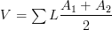

S.C. B.E.R.M. Explorer Online Help
Welcome to the B.E.R.M Explorer!
A product of the South Carolina Department of Health and Environmental Control
This application is designed to provide South Carolina beachfront communities, researchers and the general public access to topographic and bathymetric data for various beach areas in South Carolina. The Volume tool can also be used to estimate the volume of Beach erosion over multiple years.
Symbology
| Symbol | Name | Description |
|---|---|---|
 |
Corrected Overlaps | Occasionally, overlaps of collection points occur. Overlaps are areas along the collection path where the seaward order of collection is interrupted and for a short period collection points move back toward the shore before again moving seaward. The overlapping points are removed to create a generally seaward moving transect. |
 |
Collection Gaps | Often during the collection process, impediments or obstructions appear. These are typically buildings, thick scrub or marsh areas. Because the transects are created from the collection points, collection gaps are not readily apparent. |
| Transects | Transects are simply the "lines" created from collections points | |
 |
Comparison Transects | There is variation in the "path" of yearly transects. Comparison transects are simplified representations of all the yearly transects for a given monument and are used only as a means of selecting transects for comparison over various years |
Map Navigation
There are several ways to navigate:
- Use the Beach Area list hover effect to quickly navigate to a specific beach area
- Click a beach location symbol on the map interface
 to quickly navigate to a specific beach area
to quickly navigate to a specific beach area - Use the basemap toggle
 to toggle between street and imagery basemaps
to toggle between street and imagery basemaps - Hold down the shift key and drag a box on the map to zoom in
- Hold Down Ctrl+Shift to zoom out
- Roll your mouse roller to zoom in/out
- Click the + or - to zoom in/out
- Hold Down Ctrl+Shift to zoom out
Using the Application
Map data is not displayed at all scales. Use the map navigation components to find the beach area you're interested in analyzing. Once zoomed into the desired location,click on a transact. The chart window will slide up with
default year as 2014. For individual years, Click on the button corresponding to the year of interest to display the data set you would like to examine, or click the "All" button to compare data sets over multiple years.

Once a transect is clicked, data collection points for that transect will be displayed in beach profile chart/graph. The profile is a side-view or "slice" of beach topographic and nearshore bathymetry along the transect. Transect (beach monument) number and collection date is displayed on the top of the chart.

After the profile is displayed in the chart, moving your mouse (cursor) over the chart will reveal the topographic/bathymetric value and corresponding location of that point on the map. As you move over the chart, location symbol moves along the transect.

On the lower right corner of the map, you'll see a small button. Clicking this button will toggle the display of the map legend.
Clicking this button will toggle the display of the map legend.
On the top navigation menu. You will see 'Download' . Hover on this to display the beach data to download.
IMPORTANT NOTE:
Data collection typically starts at or very near the beachfront geodetic monuments. However, monuments are periodically replaced which can mean being relocated several feet or yards from the previous location. Due to monument replacement, as well as other factors, collection does not begin at the exact same location each year, there is sometimes a substantial landward or seaward difference in collection sets. Like most charts, the charting library used in BERM Explorer assumes that the first point in the collection should be plotted from the "zero" position on the chart. Because of differing starting position over the various collection years for each transect, this can cause an offset when multiple years are plotted (compared) on the chart in BERM Explorer.
To account for differing starting points, OCRM determined the most landward point for each transect from the 2014-2018 data sets, used those selected points to generate a line. The line was buffered 100 feet. Then, the selected starting points were compared with the resulting 100-foot buffered line to determine the closest point on the line for each. Those resulting points were used to re-calculate the distance value.This value is used in BERM Explorer to ensure that differing starting points are reflected accurately in the BERM Explorer profile chart. OCRM chose to use the 100-foot offset because it allows for flexibility in the event beachfront geodetic monuments are relocated substantially landward in the future. This does not substantially alter the profile. It simply ensures that the profiles plot correctly in relation to profiles from other years. This is only used for comparison of multiple years.
Individual profiles are plotted using the distance values collected in the field. Topographic/bathymetry datasets, grouped by beach area, are available for download as zip files. Click the Download link on the header menu.Each zip file contains an ESRI shapefile and a comma-delimited .CSV file.
VOLUME CALCULATOR
The Volume tool can be used to estimate the volume of earth between two selected contours. This volume can be compared with volume from other years to further estimate the net volume of erosion between selected years. The Volume tool can be accessed by clicking the volume calculator button on the top right corner of the chart window.
Using the Volume Calculator
To use the Volume tool. First, select the Upper Contour button and click the chart to set the starting position. Next, select the Lower Contour button and click the chart to set the ending position. Click the calculate button to calculate the volume. Use the Reset button to reset the Volume tool.
The volume is calculated using the "Mean Area Method" for calculating Earthwork. The Average or mean End-Area method is a useful tool for estimating quantities mostly in construction. It is an approximate method of calculating volume and is accurate enough for most situations. The general concept is that you calculate the total volume (V) of a material given, the area of two ends (A) and the perpendicular distance between the two area-faces (L). For a volume comprised of several sections you sum them up using: . See https://www.reviewcivilpe.com/average-end-area-method/ for more information.
More Information
Should you require additional information on beach access in S.C. or have questions/comments about this application, please contact DHEC - OCRM at 843-953-0200.
Browser Compatibility
The BERM Explorer app is supported on the following browsers: Microsoft IE 9/10, Mozilla Firefox, Google Chrome and Apple Safari. For IE, if the application does not display correctly configure the IE browser to trust the site in compatibility view. Instructions on how to do this in the various IE versions are found in the link below.
How to fix site display problems with compatibility view.
DISCLAIMER:
The South Carolina Department of Health and Environmental Control (S.C. DHEC) maintains this website as a service to the public. While S.C. DHEC makes every effort to provide accurate and complete information, data may change prior to updating. S.C. DHEC provides no warranty, expressed or implied, as to the accuracy, reliability or completeness of furnished data.